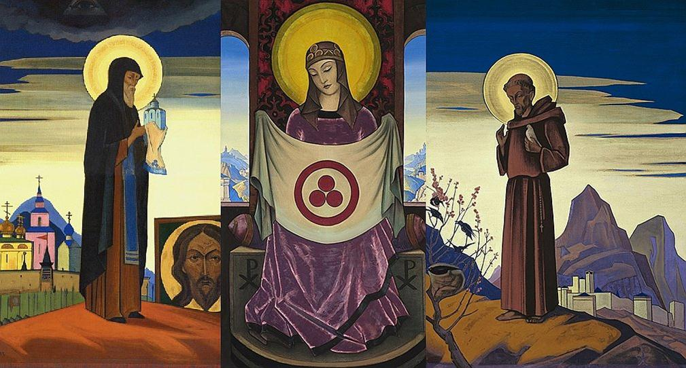
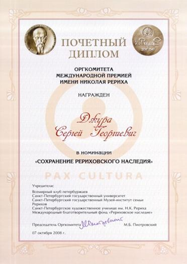
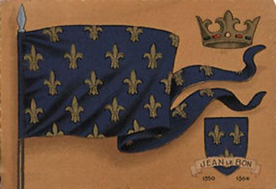

La bannière de la victoire au-dessus de la Russie et de la Nouvelle Russie (Novorossia)
par Sergueï DJOURA
Un événement d’une importance majeure a eu lieu récemment dans la culture mondiale du XXe et du XXIe siècle et dont l’importance n’est peut-être pas encore pleinement mesurée. Ainsi, pour la première fois, le triptyque de Nicolas Roerich (La Madone des Oriflammes, Saint-Serge et Saint-François d’Assise) a été réuni.
L’Oriflamme (du latin. aurum - or, flamma - flamme) était, dans la France médiévale, ce qu’on appelait la bannière du roi. C’est lui qui était fixé sur une lance au moment critique de la bataille (Dictionnaire encyclopédique de F.A. Brogxauz et I.A.Efron, 42). La Bannière de la Paix et le Pacte Roerich, dont l’anniversaire a été célébré dans le monde entier en 2015, portent de nombreuses significations. Trois cercles rouges dans un autre grand cercle d’après Nicolas Roerich signifient le Passé, le Présent et l’Avenir dans l’Anneau de l’Eternité. Parmi les autres explications figure la Trinité. La Trinité peut être constituée de la Science, de l’Art et de la Philosophie dans l’anneau de la Culture, en effet, de la Synthèse. Cette dernière interprétation est très moderne, car surtout maintenant il est arrivé le temps où on réalise que la science n’est pas la seule source de nos connaissances sur le monde. Dans cette interprétation, en conformité avec le théorème d’incomplétude de la connaissance de tout système complexe de Gödel, tôt ou tard des problèmes, qui ne peuvent pas être résolus par des moyens scientifique, apparaissent. L’humanité après avoir traversé trois types de pensée - mythologique, religieux et scientifiques - vraisemblablement arrive en face de la nécessité d’une synthèse de toutes les meilleures choses découvertes par les trois systèmes citées ci-dessus. Ce fait donne une puissante impulsion au développement ultérieur de la science, enrichie par la sagesse et la cordialité des doctrines philosophiques orientales, des religions et de l’art par une meilleure compréhension des ceux-ci. La Bannière de la Paix comme un symbole du Pacte Roerich met en priorité la culture sur des intérêts politiques, économiques, ainsi que d’autres intérêts de l'humanité, car d’après l'un des biographes de mérite de Nicolas Roerich P.F. Belikov: «La politique mondiale et l'économie mondiale ne constituaient jamais les moments décisifs de l'évolution. Le but de l'évolution ce n’est pas la création de l'homme de pensée politiquement correcte, mais d’un homme capable de penser par des catégories cosmiques.
La politique, l’économie, toutes les formations sociales créées apprennent à l’homme sur des exemples exigus et temporaires à comprendre l’existence. Il serait absurde de penser que «l'équité» ou l'injustice de ces formes de la vie sociale de courte durée sont inhérentes à l'«Esprit Cosmique».
C’est un fait intéressant que le Bulletin d’«Oriflamme» soit publié depuis plus de 20 ans par l'Université Nationale Technique de Donetsk et ait reçu des prix internationaux.
Quelle est la signification de cet événement et du Tryptique? Nous pensons qu’il y a encore des choses à venir. Sur un des tableaux (la partie gauche du Triptyque - Saint Serge de Radonège), une prophétie est écrite: « Saint-Serge à trois reprises doit sauver la Terre Russe. La première fois, à l’époque du prince Dmitri, la deuxième aux temps de Minin. La troisièmement - maintenant… ». Selon la célèbre prophétesse Vanga ce tableau est « le plus grand trésor de la Russie ». Pourtant, jusqu’à ce jour, l'idée de Nicolas Roerich de réunir les trois tableaux n'avait pas pu encore être réalisée, car tous ces tableaux avaient été achetés et dispersés à travers le monde.
Une explication du sens sacré de la Bannière de la Paix a été donné au début des années 90 par O.P. Berdnik, chef de la République Spirituelle Ukrainienne, lors de son discours en tant que candidat au poste du Président de l'Ukraine dans la salle historique de l'Université Nationale Technique de Donetsk - la partie la plus importante de la composition (les trois anneaux dans l'anneau de l'éternité). L’explication de ce symbole est donné par la citation d’une prophétie dans la « cryptogramme de l’Orient » : « Trois racines divisées par la malédiction se réunirons par l’amour ». Puis il a déclaré que ces trois racines sont la Russie Kiévienne (toute l'Ukraine), la Ruthénie Blanche (Biélorussie) et la Sainte Russie (Russie). Ainsi, l'Est et l'Ouest se sont rencontrés ensemble pour la première fois. Le célèbre philosophe allemand de la culture, économiste, sociologue et historien Werner Sombart écrivait que la situation dans le monde, extrapolée sur la situation dans la République Populaire de Donetsk et la Nouvelle Russie en général représente « l’ancienne guerre mystique entre la civilisation des commerçants et la civilisation des vrais héros ».
Au moment le plus dangereux et décisif de la bataille, l’oriflamme du Roi de France permettait de s'unir pour résoudre définitivement cette bataille. Et, dans ce sens, ce n’est pas en vain que la plupart de Volontaires français luttent du côté des Forces de la Lumière, des forces de la Nouvelle Russie. Ceci est un signe spécial, la clé de la victoire de ces forces de la lumière (Nicolas Roerich traduisait la notion de « culture » du sanskrit comme « culte » - « vénération » et « hourra » - « lumière »).
Autrement dit, сe n’est pas un combat pour l'argent, l'économie, la politique mais pour la lumière. Comme à l’époque de l'escadron «Normandie-Niemen», la présente génération des Français met le combat pratiquement sous la Bannière du roi français du côté des Forces de la Lumière. En outre, c’est surtout signifiant qu’on a confié aux représentants de L’Université Nationale Technique de Donetsk de transmettre la Bannière à la Vierge d’Oriflamme dans les murs du théâtre académique nationale d’opéra et de ballet le jour même de l’anniversaire du Pacte Roerich.
Alors, l'histoire se répète. С’est un fait significatif qu’en 1943 c’est également à l’Opéra de Donetsk que la Bannière de la Victoire a été affichée comme un gage de la future Victoire. Et le jour de cette victoire est arrivé. Ainsi nous allons voir prochainement une autre victoire, celle de la Nouvelle Russie, car ainsi commence l’apprentissage de l'Éthique Vivante, offert par la famille Roerich au monde «Mon premier message à la Nouvelle Russie» ... Le Bulletin « Oriflamme » peut être trouvé sur le site: http://roerich.com/5.htm Donetsk polytechnique Vivat la Polytechnique de Donetsk !
Partager cette page